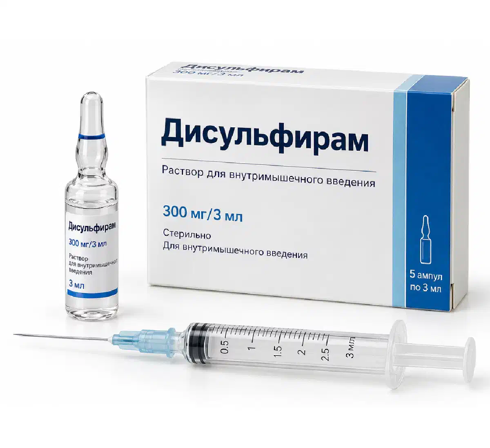

+38(068) 79 72 782
+38(068) 79 72 782Чи можна закодуватися одразу після запою
Терміни підготовки, протипоказання та рекомендації нарколога


Безкоштовна консультація, працюємо цілодобово 24/7
Терміни підготовки, протипоказання та рекомендації нарколога

Дата написання: 22 жовт. 2026 р.
Останнє оновлення: 1 лист. 2026 р.
Кодування від алкоголізму одразу після запою зазвичай не рекомендується, оскільки організм пацієнта може перебувати у стані алкогольної інтоксикації або абстиненції. Після тривалого вживання спиртних напоїв нерідко спостерігаються порушення роботи серцево-судинної та нервової системи, зневоднення, коливання артеріального тиску, тривожність і безсоння. Проведення процедури без попередньої оцінки стану здоров’я може супроводжуватися додатковими ризиками. Перед початком протирецидивного лікування важливо стабілізувати стан пацієнта, виключити небезпечні ускладнення та визначити відповідний метод терапії. У більшості випадків спочатку проводиться виведення із запою, після чого нарколог оцінює готовність пацієнта до подальшого лікування. Тривалість підготовки залежить від тяжкості алкогольної залежності, загального стану організму та обраного препарату або психотерапевтичного методу.
Після тривалого вживання алкоголю організм зазнає значного навантаження. Можливі порушення водно-електролітного балансу, прискорене серцебиття, підвищення артеріального тиску, погіршення сну та виражена психоемоційна нестабільність. Особливо небезпечними є стани, за яких розвивається тяжкий алкогольний синдром відміни. Перед кодуванням необхідно переконатися, що у пацієнта відсутні ознаки гострої інтоксикації та небезпечної абстиненції. За потреби лікар призначає лікування синдрому відміни, корекцію виявлених порушень і медичне спостереження. Консультація нарколога допомагає визначити, наскільки організм відновився після запою та чи є протипоказання до обраного способу лікування. Стабілізація стану знижує ймовірність ускладнень і дозволяє пацієнту свідомо брати участь у подальшій терапії алкогольної залежності.
Виведення із запою та кодування від алкоголізму є різними етапами медичної допомоги. Виведення із запою спрямоване на безпечне припинення тривалого вживання спиртного, діагностику та лікування алкогольної абстиненції, запобігання судомам, делірію та іншим ускладненням. Залежно від стану пацієнта можуть знадобитися медикаментозна терапія, поповнення рідини при зневодненні та спостереження лікаря. Кодування, своєю чергою, належить до методів профілактики повторного вживання алкоголю. У межах медикаментозного лікування застосовуються препарати з різними механізмами дії, включаючи дисульфірам і налтрексон. Окремо використовуються психотерапевтичні підходи. При цьому лікування алкогольної залежності не обмежується однією процедурою: для стійкого результату важливі психологічна підтримка, робота з причинами вживання алкоголю та подальше спостереження спеціаліста.
Тривалість утримання від спиртних напоїв перед кодуванням визначається індивідуально. У деяких програмах лікування пацієнту рекомендують зберігати тверезість протягом 3–7 днів або довше, проте такий термін не є універсальною медичною вимогою. Для окремих препаратів існують власні мінімальні інтервали після вживання алкоголю. Наприклад, дисульфірам не можна призначати у стані сп’яніння; згідно з рекомендаціями щодо його застосування, необхідно щонайменше 12 годин без алкоголю, але цього недостатньо, якщо зберігається абстиненція або є інші протипоказання. При тривалому запої підготовка може займати більше часу, оскільки потрібно завершити лікування синдрому відміни. Перед кодуванням від алкоголізму лікар оцінює не лише кількість днів тверезості, а й загальний стан пацієнта, результати обстежень, лікарські препарати, які він приймає, та ймовірність розвитку ускладнень.
Тривалість підготовки до кодування визначається кількома медичними факторами. Лікар враховує тривалість останнього запою, кількість вживаного алкоголю, вираженість фізичної залежності, вік пацієнта та наявність супутніх захворювань. Особливе значення мають стан печінки, нирок, серцево-судинної системи та психічне самопочуття. При вираженому треморі, безсонні, тахікардії або нестабільному артеріальному тиску може знадобитися додаткове лікування. Якщо раніше виникали судоми або алкогольний делірій, необхідна особливо ретельна оцінка ризиків. Виклик нарколога додому може бути першим етапом обстеження при стабільному стані, проте пацієнтам із тяжкою абстиненцією потрібна стаціонарна допомога. Лише після медичної оцінки лікар визначає відповідний термін проведення процедури.
Проведення планового кодування під час гострого алкогольного синдрому відміни зазвичай відкладають до стабілізації стану. Абстиненція може проявлятися тремтінням рук, підвищеною пітливістю, тривожністю, безсонням, нудотою, прискореним серцебиттям і коливаннями артеріального тиску. При тяжкому перебігу можливі судомні напади, галюцинації та алкогольний делірій. Ці стани потребують не кодування, а своєчасної медичної допомоги. Лікування алкогольної абстиненції спрямоване на усунення небезпечних симптомів і запобігання ускладненням. Після завершення гострого періоду пацієнт може перейти до протирецидивної терапії. При судомах, сплутаності свідомості, галюцинаціях або втраті свідомості необхідно викликати екстрену допомогу за номером 103 або 112.
Крапельниця після запою може використовуватися за певних медичних показань, наприклад для корекції зневоднення та електролітних порушень. Однак інфузійна терапія не є обов’язковою для кожного пацієнта та не гарантує повної готовності організму до кодування. Навіть після покращення самопочуття можуть зберігатися порушення сну, тривожність, коливання тиску та ризик ускладнень алкогольної абстиненції. Крім того, крапельниця сама по собі не усуває алкогольну залежність і не замінює повноцінного лікування синдрому відміни. Крапельниця від алкоголю призначається лікарем з урахуванням стану пацієнта, а подальша підготовка включає оцінку протипоказань і вибір методу лікування. Рішення про кодування приймається після стабілізації стану, а не безпосередньо після завершення інфузії.
Перед кодуванням нарколог проводить медичну консультацію, збирає анамнез і оцінює загальний стан пацієнта. Лікар уточнює тривалість вживання алкоголю, наявність попередніх запоїв, хронічних захворювань, алергічних реакцій і приймання лікарських препаратів. Проводяться вимірювання артеріального тиску, частоти серцевих скорочень та оцінка неврологічних симптомів. Залежно від обраного методу можуть знадобитися загальний аналіз крові, біохімічні показники функції печінки та нирок, дослідження електролітів і електрокардіограма. При плануванні лікування налтрексоном необхідно окремо виключити вживання опіоїдів та оцінити стан печінки. Перед застосуванням дисульфіраму також враховуються протипоказання з боку серцево-судинної системи та інші медичні обмеження. Анонімна консультація нарколога дозволяє обговорити доступні варіанти лікування та визначити перелік необхідних обстежень.
Тривалість запою впливає насамперед на оцінку тяжкості алкогольної залежності та ризику синдрому відміни. Після кількох днів інтенсивного вживання алкоголю у пацієнта можуть спостерігатися виражена слабкість, порушення сну, тривожність і зміни артеріального тиску. При тривалому вживанні підвищується ймовірність зневоднення, порушень обміну речовин і ускладненої абстиненції, особливо у людей із тяжкою фізичною залежністю. Однак тривалість запою сама по собі не визначає тяжкість стану: важливі кількість алкоголю, попередні епізоди відміни, наявність судом і супутніх захворювань. Після стабілізації лікар може розглядати медикаментозне кодування від алкоголізму, психотерапевтичну допомогу або інші доказові методи підтримувального лікування. Вибір залежить від медичних показань, цілей пацієнта та його добровільної згоди.
Медикаментозне кодування після запою розглядається після усунення гострої інтоксикації, лікування вираженої абстиненції та оцінки протипоказань. Одним із препаратів, що застосовуються, є дисульфірам, який спричиняє неприємну, а іноді небезпечну реакцію при вживанні алкоголю. Інший варіант — налтрексон, який зменшує підкріплювальну дію спиртного та допомагає знизити ризик повернення до надмірного вживання. Ці препарати відрізняються механізмом дії, протипоказаннями та вимогами до підготовки. При виборі кодування уколом від алкоголізму необхідно враховувати конкретну діючу речовину, зареєстровану лікарську форму та інструкцію із застосування. Налтрексон також потребує перевірки відсутності вживання опіоїдів, оскільки може спровокувати опіоїдну абстиненцію у залежного пацієнта. Призначення лікарських препаратів здійснюється виключно після обстеження лікарем.
Кодування за методом Довженка належить до психотерапевтичних підходів, заснованих на навіюванні та формуванні установки на відмову від вживання алкоголю. Перед проведенням такої процедури пацієнт повинен перебувати у тверезому стані, розуміти те, що відбувається, і добровільно погоджуватися на участь. При вираженій абстиненції, порушеннях свідомості, сильній тривозі або інших гострих станах процедуру необхідно відкласти. Тривалість попереднього утримання від алкоголю визначається спеціалістом з урахуванням особливостей пацієнта. Водночас важливо враховувати, що переконливих якісних доказів ефективності методу Довженка як самостійного лікування алкогольної залежності недостатньо. Тому кодування за методом Довженка не слід розглядати як заміну медикаментозної терапії з доведеною ефективністю, психотерапії та тривалої профілактики рецидивів.
Перед кодуванням необхідно виключити стани, за яких проведення процедури може бути небезпечним. До тимчасових причин для відтермінування належать гостре алкогольне сп’яніння, виражений синдром відміни, нестабільний артеріальний тиск, порушення свідомості, судомні напади та гострі психічні розлади. Додаткового обстеження потребують тяжкі захворювання печінки, серцево-судинної системи та інші значущі порушення здоров’я. Протипоказання також відрізняються залежно від препарату. Наприклад, дисульфірам може бути небезпечним при певних серцевих захворюваннях, а налтрексон протипоказаний при поточній опіоїдній залежності та деяких захворюваннях печінки. Перед процедурою необхідна консультація нарколога, яка дозволяє визначити індивідуальні ризики. За наявності протипоказань лікар підбирає альтернативний метод лікування або рекомендує відкласти початок терапії.
Поєднання виведення із запою та кодування в один день зазвичай не є оптимальним варіантом лікування, особливо після тривалого вживання алкоголю. Основне завдання першого етапу полягає в безпечному припиненні вживання спиртного, оцінці тяжкості абстиненції та стабілізації стану пацієнта. Якщо одразу після надання допомоги зберігаються тремор, тривожність, тахікардія або інші симптоми відміни, проведення планового кодування відкладають. Навіть при суб’єктивному покращенні самопочуття необхідно враховувати можливість відстроченого розвитку ускладнень. В окремих клінічних ситуаціях протирецидивне лікування може розпочинатися невдовзі після завершення детоксикації, проте терміни визначаються індивідуально. Виведення із запою та подальше кодування доцільно розглядати як взаємопов’язані, але самостійні етапи комплексного лікування алкогольної залежності.
Добровільна та інформована згода є обов’язковою умовою медичного лікування алкогольної залежності. Перед проведенням процедури пацієнт повинен отримати зрозумілу інформацію про обраний метод, його очікувану ефективність, можливі побічні реакції, протипоказання та альтернативні варіанти терапії. Примус, залякування та проведення кодування без відома людини неприпустимі. Особливо важливо, щоб пацієнт перебував у стані, який дозволяє свідомо приймати рішення, і не мав порушень свідомості внаслідок алкогольної інтоксикації або тяжкої абстиненції. Лікування алкоголізму потребує активної участі самого пацієнта, оскільки стійка відмова від спиртного пов’язана не лише із застосуванням лікарських препаратів, а й зі зміною звичок, формуванням мотивації та готовністю дотримуватися рекомендацій лікаря.
Збереження потягу до спиртного після виходу із запою є поширеною проблемою при алкогольній залежності. Навіть після усунення фізичних симптомів відміни пацієнт може відчувати бажання вжити алкоголь, дратівливість, тривожність, порушення сну та емоційну нестабільність. Важливо розуміти, що виведення із запою вдома за наявності медичних показань допомагає впоратися з гострим станом, але не усуває психологічну залежність і не замінює подальшого лікування. Такі прояви не завжди вказують на необхідність негайного кодування, але потребують оцінки фахівця. Лікар може запропонувати медикаментозну терапію для зниження ризику рецидиву, психотерапію та розроблення індивідуального плану відновлення. Особливе значення має виявлення ситуацій, що провокують вживання алкоголю: стресових обставин, конфліктів, звичного оточення та емоційних перевантажень. Лікування потягу до алкоголю має враховувати вираженість залежності, супутні захворювання та попередній досвід терапії. Своєчасне звернення по допомогу дозволяє зменшити ризик повторного запою.
Профілактика повторного запою повинна тривати й після проведення кодування. Важливо розуміти, що жоден медикаментозний або психотерапевтичний метод не гарантує довічної відмови від алкоголю. Для досягнення стійкого результату рекомендується поєднувати призначене лікарем лікування з психотерапевтичною підтримкою, регулярними консультаціями та зміною повсякденних звичок. Пацієнту корисно навчитися розпізнавати ранні ознаки можливого рецидиву, уникати ситуацій із високим ризиком вживання спиртного та звертатися по допомогу при поверненні сильного потягу. За потреби спеціаліст коригує програму лікування та пропонує додаткові методи підтримки. Кодування від алкоголізму слід розглядати як можливу частину комплексного лікування, а не як єдиний захід боротьби із залежністю. Якщо після запою зберігається погане самопочуття або виникають сумніви щодо термінів кодування, рекомендується звернутися до нарколога для індивідуальної оцінки стану та вибору безпечної тактики лікування.

Статтю перевірено експертом
Богоденко Костянтин
Лікар-анестезіолог, ординатор
Можливо цікава стаття:
Який укол викликає відразу до алкоголю

Так, ми суворо дотримуємося повної конфіденційності на всіх етапах лікування. Інформація про пацієнта, діагноз та проходження терапії не передається третім особам. Звернення до нас не тягне за собою постановку на облік. Ви можете бути впевнені у безпеці та анонімності.
Номер телефону:
+380 (68) 797 27 82
+380 (50) 021 69 57
Адресу наркологічного центра вашого міста уточнюйте за
телефоном
Працюємо: Київ, Одеса, Львів, Харків, Дніпро, Запоріжжя,
Черкасах, Чугуєві, Чорноморську, Кам'янському
Telegram: t.me/umbrellaplus
Графік работы: Цілодобово